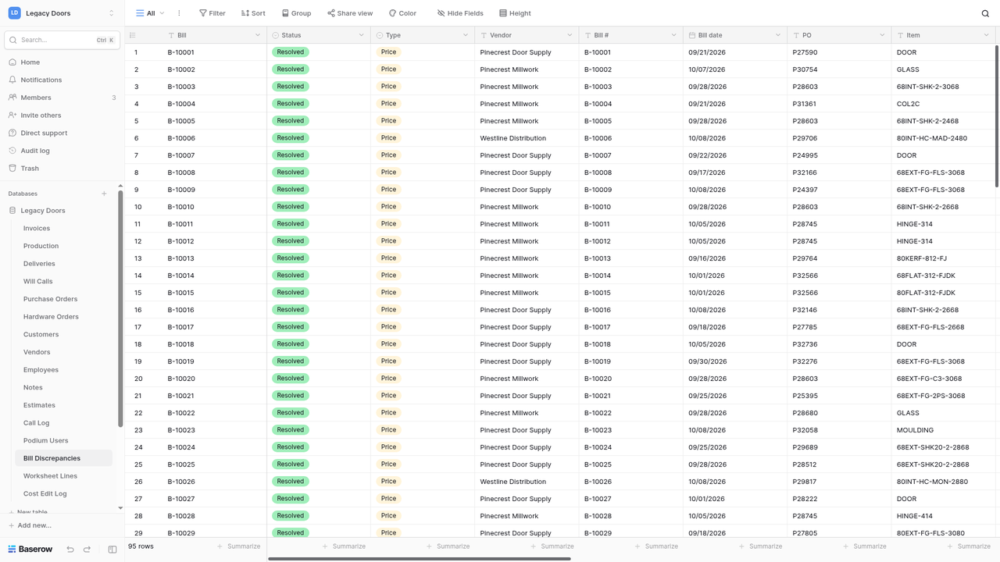

About
Hi, I'm Spencer. For four years I was General Manager of an 11-person door and trim distributor in Mesa, running sales, purchasing, bookkeeping and scheduling. When the company was acquired in 2026 I stayed on, and I now do commercial sales for the new owner, Legacy Doors & Trim, estimating commercial projects from plans.
While I was running the business, I also built the software it ran on. The company worked on paper and QuickBooks, and nothing tracked an order between the estimate and the delivery. In 2022 I started with a task board and grew it into a full ERP built around how each person worked: 31 tables, every catalog item mapped to vendors' part numbers, and 29 automations keeping QuickBooks, the shop floor and the customers in sync. From May 2025 to November 2026 its workflows handled about 46,000 business events. The case study tells the whole story, including what I'd do differently.
I didn't learn n8n, Baserow and Python from a course. I learned them because backorders weren't being passed on to customers and bills were slipping through. The homelab behind my projects grew the same way: about twenty services on Linux, PostgreSQL, backups, VPNs, reverse proxies, and a local LLM bench on a 4 GB GPU. For AI work I run local models on private data and let code check what they return.
Before the distributor I processed loans and ran a fraud-and-eligibility QC team for an emergency rental assistance program. I've spent most of my career explaining technical tools to people who don't want to learn them.
Outside work: carpentry (Spencer B Carpentry LLC), growing oyster and lion's mane mushrooms, and Mandarin Chinese at an upper-intermediate level (preparing for HSK 5).
Experience
-
Oct 2026 — Now
Commercial Sales · Legacy Doors & Trim
I estimate and quote commercial door and trim projects from plans for the company that acquired Aztec Doors & Trim.
-
Jul 2022 — Oct 2026
General Manager · Aztec Doors & Trim
- Ran daily operations for an 11-person interior and exterior door distributor: sales, purchasing, scheduling, customer service, and bookkeeping in QuickBooks Online.
- Designed and built the company ERP on Baserow and took it from requirements through training and go-live to daily support. Every employee used it.
- Automated the office with 29 n8n workflows that saved an estimated 10+ hours a week. Wrote Python for SKU matching and a bill checker that entered 294 vendor bills and credits in its first month.
- Set up the office's first self-hosted servers on Debian and Docker Swarm.
-
2024 — Now
Founder / Owner · Spencer B Carpentry LLC
A small carpentry and finish-work business. I handle the quoting, customer contact and bookkeeping, and do the work myself.
-
May 2021 — Jul 2022
Remote QC Supervisor · NYS Emergency Rental Assistance
I was promoted from Housing Specialist to lead the QC team that cleared applications for payment. The team verified income against eligibility rules, calculated payments and resolved potential fraud cases.
-
Mar 2019 — Mar 2021
Loan Processor · TMG Loan Processing
I managed loans from first contact to funding: reviewing financials, clearing underwriting conditions and working with borrowers. I also built two tools for the team:
- TD-Parser (turn-down parser) processed the list of applicants who had been turned down.
- fund-faster was a Chrome extension that connected our workflow to the CRM.
-
2017 — 2018
Estimator / Sales & contract developer · Aztec Doors & Trim, Infotainment Radio
I estimated custom door packages from plans and built the store's online catalog and React/Node pricing tools. On a short contract I also built server-side image and video processing services.
Projects
-

ERP for an 11-person distributor ↗ Case study
The ERP I designed, built and rolled out for the distributor I managed: 31 Baserow tables, a catalog with 1,428 vendor part-number cross-references, and 29 n8n workflows keeping QuickBooks Online, the shop floor, purchasing and customer texts in sync. Every employee used it, and three were daily power users.
-

Bill checker ↗ Write-up
A Python tool that ran every morning. It read vendor bills against their POs, entered the ones that reconciled in QuickBooks, and logged every price or quantity difference for review. A local model answered narrow questions, and code checked every answer.
-
small-gpu-bench ↗
Tests of real LLM tasks (redaction, document audit, tool selection, judge calibration) on a 4 GB Pascal GPU. It includes a stdlib-only test harness, a pattern where a checker decides when to escalate, and the source for every number.
-
prompt-tune ↗
A cloud model rewrites a local model's prompt using only an aggregate report, so it never sees a record of the private data. The repo includes the gateway, the leak tests and the results of the first real runs.
Earlier work (2017–2021)
- Shop.Doormanstan: the store's online catalog and its Lambda, Express and DynamoDB backend. The site closed with the original business. Code: backend, jamb calculator.
- Fair Rentals: a 2017 Chingu project by a 4-person remote team, built with MERN, GraphQL and Auth0. Code
- Google Sheets CRUD: a small library that used Google Sheets as a backend with no login, from when the shop database was a spreadsheet and a nightly script. Code
- Just for fun: Hex-SRPG, a hex-grid tactics game in Godot, and redRouge, my first roguelike in plain JavaScript and canvas.
More on GitHub.